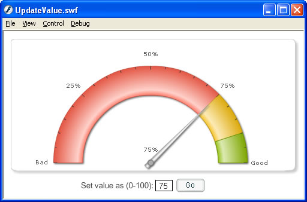

FusionWidgets and Flash > Using Chart API |
Most charts in FusionWidgets v3 suite exposes methods that can be utilized in your Flash code, when loading those charts. For example, the angular gauge exposes methods to set and retrieve data for each dial, show/hide message loggers etc. You can find the list of APIs that each chart expose in each chart's "Flash API" or "JavaScript API" section. Most of the JavaScript methods exposed can be used in Flash too. Here, we'll see a simple example where we'll update the value of an angular gauge using its API, based on user input. |
| An example |
We'll start this example from MyFirstChart.fla where we had built an angular gauge. We create a copy and save it as UpdateValue.fla in the same folder. We'll now extend that example to include an input text field and a button in the movie. The users would be able to enter new value for the gauge in this textfield. And, when the button would be pressed, we'll update the chart's value using its API. Shown below is how the application will finally look: |
|  |
As you can see above, we've an input text field (with variable name as chartValue). And we've a button with instance name as btnGo. The code in Actions layer are still the same. In this movie, we add another layer named as "Button Actions" and add the following code to its first frame: |
| var objListener:Object = new Object(); objListener.click = function(){ //Click handler for button. Here, we need to update chart value. //We've our reference of chart instance stored in myFirstChart. //Now, we can directly call myFirstChart.setValue(dialIndex, value) //Here, we set dialIndex as 1 as we've only 1 dial myFirstChart.setData(1, parseInt(chartValue)); } btnGo.addEventListener("click",objListener); |
Here, we've defined the click event handler for the button. In the handler method, we simply call the setData(index, value) method of the angular gauge and update its value. Each chart exposes its own list of methods. For complete method list for each chart, see the "Flash API" or "JavaScript API" section of each chart. When you now run the movie and update the value, you'll see that the chart behaves accordingly. |